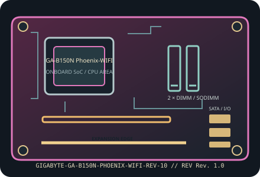

[ INDIVIDUAL COMPONENT // MOTHERBOARDS ]
GIGABYTE GA-B150N Phoenix-WIFI (Rev. 1.0)
17 cm LGA1151 Mini-ITX board with Intel B150 chipset and integrated dual-band wireless. This record is specifically for GA-B150N Phoenix-WIFI Rev. 1.0; CPU generation and BIOS must be checked together.

IDENTIFICATION: Confirm the complete model suffix and PCB revision printed on the board. Select firmware and parts from the documentation for this exact revision; a matching socket or product family alone does not establish compatibility.
Specifications
| Exact model / PCB revision | GIGABYTE GA-B150N Phoenix-WIFI (Rev. 1.0) |
|---|---|
| Processor / socket | LGA1151 socket for supported 6th-generation Intel Core, Pentium and Celeron desktop processors; GIGABYTE lists 7th-generation support with a BIOS update. Check the exact CPU support list and minimum BIOS. |
| Chipset | Intel B150 Express. |
| Form factor | Mini-ITX, 170 × 170 mm. |
| Memory and slots | Two DDR4 dual-channel DIMM slots, up to 32 GB; DDR4-2133 platform rate, non-ECC unbuffered UDIMMs (ECC modules, if used, operate non-ECC). |
| Expansion | One PCIe 3.0 x16 slot; M.2 E-key wireless module interface and rear-side M.2 Socket 3 storage interface supporting the listed SATA/PCIe modes. |
| Storage | Four SATA 6 Gb/s ports plus one M.2 Socket 3 SSD socket (type 2260/2280; verify SATA/PCIe mode and any lane sharing in the Rev. 1.0 manual). |
| Network and onboard I/O | Intel Gigabit Ethernet plus onboard dual-band 802.11ac Wi-Fi and Bluetooth; antenna connectors must be attached for wireless use. Onboard HD audio and CPU-dependent display output. |
| Power connections | 24-pin ATX main-power and CPU ATX12V/EPS input; follow Rev. 1.0 manual for connector pinout and PSU requirements. |
| BIOS / firmware | GIGABYTE UEFI DualBIOS. 7th-generation LGA1151 CPU support requires an appropriate BIOS; use the BIOS and CPU support files assigned to Phoenix-WIFI Rev. 1.0, not another B150N product. |
| Enclosure compatibility | Mini-ITX 170 × 170 mm mounting layout. Confirm Mini-ITX standoffs, Wi-Fi antenna lead/connector clearance, x16 card length and dual-slot thickness, and airflow around the CPU VRM. |
Compatibility and revision notes
The “Phoenix-WIFI” SKU has onboard radio hardware and a model-specific BIOS branch. Do not confuse this with similarly named B150N boards without the Phoenix/WIFI suffix.
Before assembly, verify the exact CPU support list and minimum firmware, memory generation and population order, storage lane sharing, add-in card dimensions, chassis standoffs and PSU leads in the cited revision-matched manual. Observe ESD precautions and never update with firmware for a similarly named board.
Installation and preservation
Inspect the PCB revision silkscreen, socket or soldered processor, memory slots, power connectors, storage sockets and rear-I/O ports before use. Record BIOS version, date/serial identifiers, installed accessories and test conditions; keep the board manual and firmware tied to its exact model and revision.
Manufacturer sources & manuals
- GIGABYTE — GIGABYTE GA-B150N Phoenix-WIFI (Rev. 1.0) specificationsOfficial specification record for this motherboard and revision.
- GIGABYTE — GIGABYTE GA-B150N Phoenix-WIFI (Rev. 1.0) manual, BIOS and support downloadsOfficial revision-specific support page; use its manual, CPU support list and firmware downloads to verify installation and compatibility.
Specifications above are a static reference summary. The matching manufacturer manual, PCB revision and support list are authoritative.